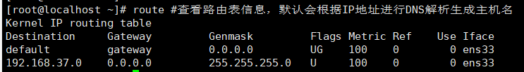
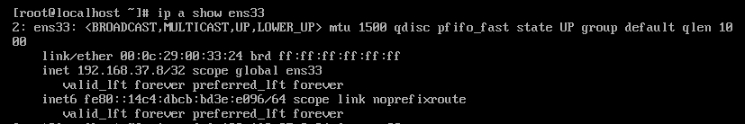
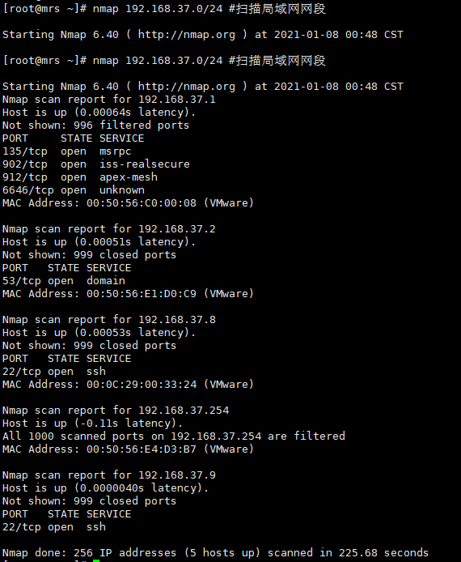
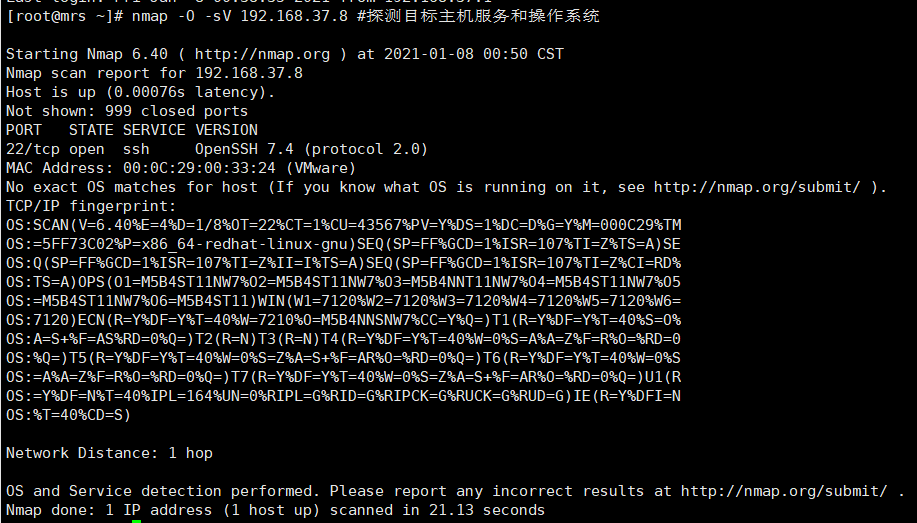

Linux 网络管理命令
文档目录：
一、ifconfig：配置或显示网络接口信息
二、ifup:激活网络接口
三、ifdown：禁用网络接口
四、route：显示或管理理由表
五、arp：管理系统的arp缓存
六、ip：网络配置工具
七、netstat：查看网络状态
八、ss：查看网络状态
九、ping：测试主机之间的网络的连通性
十、traceroute：追踪数据传输路由状况
十一、arping：发送arp请求
十二、telnet：远程登录主机
十三、nc：多功能网络工具
十四、ssh：安全地远程登录主机
十五、wget：命令行下载工具
十六、mailq：显示邮件传输队列
十七、mail：发送和接受邮件
十八、nslookup：域名查询工具
十九、dig：域名查询工具
二十、host：域名查询工具
二十一、nmap：网络探测工具和安全/端口扫描器
二十二、tcpdump：监听网络流量
一、ifconfig：配置或显示网络接口信息
1、ifconfig #显示系统中所有网卡的信息
2、ifconfig ens33 #显示指定网卡的信息
3、ifconfig -a #查看所有的网卡信息

4、ifconfig ens33 up #启动网卡
5、ifconfig ens33 down #关闭网卡
6、ifconfig ens33 192.168.37.10 #配置网卡的ip地址
7、ifconfig ens33:1 192.168.37.10 netmask 255.255.255.0 up #网卡设置别名

8、ifconfig ens33 hw ether 00:0c:29:00:33:25 #修改网卡的MAC地址
9、永久修改网卡信息，需要修改网卡的配置文件，否则重启后失效
网卡：ens33：对应配置文件路径：/etc/sysconfig/network-scripts/ifcfg-ens33
二、ifup:激活网络接口
ifup ens33 #激活网络接口
三、ifdown：禁用网络接口
ifdown ens33 #关闭网卡后网卡信息消失
四、route：显示或管理理由表
1、route #查看路由表信息，默认会根据IP地址进行DNS解析生成主机名

2、route -n #不进行DNS域名解析，会加快显示速度
3、具体含义：
Destionation：网络号，network的意思
Gateway：网关地址，通过该IP连接出去，0.0.0.0表示该路由是直接由本机传送出去
Genmask：子网掩码
Flags：路由标记信息，具体如下：
U-启动状态
H-目标路由是一个主机IP非网络
R-使用动态路由时,恢复路由信息标记
G-表示需要外部的主机来转接传递数据
M-表示路由已经被修改了
D-已经由服务设定为动态路由
!-这个路由将不会被接受
Metric：需要经过几个网络节点才能到达路由的目标网络地址
Ref：参考到此路由规则的数目
Use：有几个转送数据包参考到了此路由规则
Iface：路由对应的网络设备接口
4、route del default #删除网关方法1
route del default gw 192.168.37.2 #删除网关方法
5、route add default gw 192.168.37.2 #添加网关方法1，指明网关地址
route add default gw 192.168.37.2 dev ens33 #添加网关方法2，指明网关设备，适用于多块网络设备的主机
6、route add -net 192.168.1.0/24 gw 192.168.37.8 #配置网络路由，实现两块网卡地址，192.168.37网段可访问192.168.1.0网段

7、路由配置永久生效配置方法：
vi /etc/sysconfig/network-scripts/route-eth1 #方法一，默认此文件不存在
vi /etc/sysconfig/network-scripts/route-eth1 #方法二，默认此文件不存在
vi /etc/rc.local #方法三，写入开机启动
配置默认网关可以写在网卡内
8、配置和删除主机路由
route add -host 192.168.2.13 dev ens33 #添加去往某个主机的路由
route del -host 192.168.2.13 dev ens33 #删除主机路由
五、arp：管理系统的arp缓存
1、arp #显示arp缓存区的所有条目
Flag：C-arp高速缓存中条目，M-静态arp条目
2、arp -n #以数字形式显示arp缓存条目
3、arp -n 192.168.37.1 #指定查询arp信息
4、arp -s 192.168.37.11 00:0c:29:c0:5a:ef #静态绑定ip地址与mac地址
5、arp -d 192.168.37.11 #删除静态ARP绑定
六、ip：网络配置工具
1、ip link show dev ens33 #显示ens33网卡属性
2、ip -s -s link show dev ens33 #使用两个-s获取更加详细的属性
3、ip link set dev ens33 #激活ens33网卡
4、ip link set down ens33 #关闭ens33网卡
5、ip link set ens33 address 00:0c:29:00:33:24 #修改网卡mac地址
6、ip a #同等与ip address查看激活与未激活的网卡信息
7、删除ip地址
ip a del 192.168.37.8/24 dev ens33 #删除ip地址
8、添加ip地址（并激活）
ip a add 192.168.37.8/24 dev ens33 #添加ip地址

9、ip route #查看路由表
ip route | column -t #colum格式化，-t默认空格分隔判断输入行的列数来创建一个表
10、ip route add 192.168.10.0/24 via 192.168.37.2 dev ens33 #添加静态路由
11、ip route del 192.168.10.0/24 via 192.168.37.2 dev ens33 #删除静态路由
12、ip neighbour #使用neighbour查看arp缓存
13、ip neighbour add 192.168.1.100 lladdr 00:0c:29:c0:5a:ef dev ens33 #添加静态ARP
14、ip neighbour del 192.168.1.100 dev ens33 #删除静态ARP
七、netstat：查看网络状态
1、netstat -an #显示所有连接信息
第一行：活动网络(TCP/IP)连接说明
第一列：Proto：socket使用的协议（TCP、UDP、RAW）
第二列：Recv-Q：接收到但是还未处理的字节数
第三列：Send-Q：已经发送但是未被远程主机确认收到的字节数
第四列：Loacl Address：本地主机地址和端口
第五列：Foreign Address：远程主机地址和端口
第六列：State：socket的状态，通常仅仅TCP的状态，状态值可能有ESTABLISHED、SYN_SENT、SYN_RECV、FIN_WAIT1、FIN_WAIT2、TIME_WAIT、LISTEN等
状态解释：
ESTABLISHED：服务并发连接
SYN_SENT：尝试建立连接
SYN_RECV：已经从网络上收到一个连接请求
FIN_WAIT1：socket已关闭，连接正在或正要关闭
FIN_WAIT2：连接已关闭，冰球socket正在等待远端结束
TIME_WAIT：socket正在等待关闭处理仍在网络上的数据包，这个连接状态在生产场景中很重要，需要重点关注
CLOSED：socket不再被占用
CLOSED_WAIT：远端已经结束，等待socket关闭
LAST_ACK：远端已经结束，并且socket也已关闭，等待acknowlegement
LISTEN：socket正在监听连接请求
CLOSING：socket正在监听连接请求
UNKNOWN：socket状态未知
2、netstat -ntplu #显示所有TCP/UDP正在监听的连接信息

-p：进程号与进程名 -n：显示ip地址，不进行dns解析成主机名、域名 -t：显示所有tcp连接 -u：显示所有udp连接 -l：显示所有LISTEN状态的网络连接
3、 netstat -rn #显示当前系统的路由表
4、netstat -i #显示网络的接口状况
Iface：表示网络设备的接口名称
MTU：表示最大传输单元，单位为字节
RX-OK/TX-OK：表示已经准确无误地接受/发送了多少数据包
RX-ERR/TX-ERR：表示接受/发送数据包时产生了多少错误
RX-DRP/TX-DRP：表示接受/发送数据包时丢弃了多少数据包
RX-OVR/TX-OVR：表示由于误差而遗失了多少数据包
Flg：表示接口标记，其中各标记含义具体如下。
L：表示该接口是个回环设备。
B：表示设置了广播地址。
M：表示接受所有数据包。
R：表示接口正在运行。
U：表示接口处于活动状态。
O：表示在该接口上禁用arp。
P：表示一个点到点的连接。
正常情况下，RX-ERR/TX-ERR、RX-DRP/TX-DRP、RX-OVR/TX-OVR值应该为0，如果这几项值不为0，并且很大，那么网络质量肯定有问题，网络传输性能也一定会下降
八、ss：查看网络状态
1、ss -an #显示所有socket连接
ss -an | column -t #格式化展示
2、ss -ntplu|column -t #显示所有正在监听的tcp和udp连接
3、ss -s #统计当前established、closed、orphaned、waiting的所有tcp socket数量
九、ping：测试主机之间的网络的连通性
1、ping www.baidu.com #ping命令直接接域名或IP
2、ping -c 3 -i 3 -s 1024 -t 255 www.baidu.com #-c 3:发送3次ICMP包，-i 3:每次发包时间间隔3s -s:1024 设置发送数据包大小1024字节 -t 255 设置发送数据库的ttl为255
十、traceroute：追踪数据传输路由状况
1、traceroute www.baidu.com #查看主机的路由状况
2、traceroute -I www.baidu.com #加快查询时间 ping查询
3、traceroute -In www.baidu.com #不解析主机名
十一、arping：发送arp请求
1、arping -f 192.168.37.9 #使用-f 选项收到第一个响应时就退出，用于检测目的主机是否存活
2、arping -f 10.0.0.3 #没有运行的主机不会响应，命令一直等待，值到ctrl+c终止
3、arping -c 1 -I ens33 -s 10.0.0.5 10.0.0.2 #10.0.05-vip地址,10.0.0.2 上网网关。负载均衡器宕机时arp缓存导致故障时，让客户端缓存失效
十二、telnet：远程登录主机
telnet为明文，ssh为密文
telnet 192.168.37.9 22 #连接成功 ctrl+]进入
十三、nc：多功能网络工具
测试nv命令时需要关闭防火墙和seliunx
systemctl stop firewalld.service #关闭防火墙
getenforce #关闭selinux
1、nc -l 12345 > test01.nc #监听12345端口，将数据写入test01.nc
2、nc 192.168.37.8 12345 < test01.txt #使用nc命令向192.168.37.8端口传输 test01.txt文件
3、 nc -l 80 < testweb.txt #一直监听80端口，test.txt是发送给用户的内容
4、nc cnblogs.com 80 #手动建立与HTTP服务器建立连接的例子

5、nc -z -v 192.168.37.8 20-30 #扫描主机20-30端口
6、nc 127.0.0.1 12345 #模拟qq聊天工具，以下为窗口1，窗口2，窗口3
十四、ssh：安全地远程登录主机
1、ssh 192.168.37.9 #等同于ssh -p 22（默认22）
ctrl+d或logout退出
2、ssh -p 22 lulu@192.168.37.9 #登录指定用户
3、ssh -v root@192.168.37.9 #登录慢问题排查
十五、wget：命令行下载工具
1、特点：支持断点续传，支持FTP与HTTP，支持代理服务器，非常稳定
2、wget https://www.baidu.com/img/PCtm_d9c8750bed0b3c7d089fa7d55720d6cf.png #wget接-下载地址
3、wget -o ./testdir/123.png https://www.baidu.com/img/PCtm_d9c8750bed0b3c7d089fa7d55720d6cf.png #-o 指定文件报错的地址与文件名
4、wget –limit-rate=3k https://www.baidu.com/img/PCtm_d9c8750bed0b3c7d089fa7d55720d6cf.png #限速下载3k/s

5、wget -c http://mirrors.aliyun.com/centos/7/isos/x86_64/CentOS-7-x86_64-DVD-2009.iso #断点续传
6、wget -c -b http://mirrors.aliyun.com/centos/7/isos/x86_64/CentOS-7-x86_64-DVD-2009.iso #-b 使用后台下载
7、wget –user-agent=”Mozilla/5.0 (Windows; U; Windows NT 6.1; en-US) AppleWebKit/534.16 (KHTML, like Gecko) Chrome/10.0.648.204 Safari/534.16” http://mirrors.aliyun.com/centos/7/isos/x86_64/CentOS-7-x86_64-DVD-2009.iso #伪装代理名称下载，用于一些网站的限制
8、wget -q -T 3 –tries=1 –spider www.baidu.com #采用静默访问方式，3秒超时，重试1此，模拟爬虫方式进行访问
十六、mailq：显示邮件传输队列
1、mailq #查看邮件队列
2、mailq -v #调式信息
十七、mail：发送和接受邮件
1、mail是个软链接，真实的程序是mailx
2、mail -s “hello world from bk” 114558020@qq.com #发送邮件，以下手动输入，ctrl+d结束，邮件发出
3、echo -e “hello,this is a mail\nwelcom to www.baidu.com"|mail -s “hello from bk” 114558020@qq.com #使用管道发送邮件，echo后面是正文

4、#使用输入重定向将文件内容发送mail
5、echo “test”|mail -s “test” -a abc.jpg 114558020@qq.com #发送邮件附件
十八、nslookup：域名查询工具
1、 nslookup #进入交互模式
2、nslookup - 223.5.5.5 #命令行指定解析域名服务器
3、nslookup www.baidu.com 223.5.5.5 #非交互模式-使用域名解析服务器地址 查询域名
十九、dig：域名查询工具
1、dig www.baidu.com #查询指定域名的ip
2、dig -x 223.5.5.5 #反向域名解析
3、dig -t MX www.baidu.com #查询MX类型的域名
4、dig @223.5.5.5 www.baidu.com +trace #显示域名解析成IP的完整过程
5、dig +nocmd +nocomment +nostat www.baidu.com #精简一些说明信息
二十、host：域名查询工具
1、host www.baidu.com #域名查找
2、host -a www.baidu.com #查询详细信息
3、host -a www.baidu.com 223.5.5.5 #直接接指定的dns服务器IP
4、host -t MX www.baidu.com #指定查询类型
二十一、nmap：网络探测工具和安全/端口扫描器
1、nmap 192.168.37.9 #查看主机当前开放的端口
2、nmap -p 1024-65535 192.168.37.9 #扫描指定的端口
3、nmap 192.168.37.0/24 #扫描局域网网段

4、nmap 192.168.37.7-9 #范围扫描
5、nmap -O -sV 192.168.37.8 #探测目标主机服务和操作系统

二十二、tcpdump：监听网络流量
1、tcpdump #监视第一个网络接口下所有的数据包
2、tcpdump -i ens33 -q #-i指定端口 -q精简信息输出
3、tcpdump -n host 192.168.37.8 -i ens33 #监听指定主机 -n不进行域名解析，加快显示
4、tcpdump -n src host 192.168.37.8 -i ens33 #只监听从192.168.37.8发出的数据包
5、tcpdump -n dst host 192.168.37.8 -i ens33 #只监听192.168.37.9收到数据包
6、tcpdump -nn port 22 -i ens33 #-n不进行DNS解析，但是22会换ssh，-nn彻底
7、tcpdump -n arp -i ens33 #监听指定协议数据包
8、tcpdump ip host 192.168.37.8 -i ens33 and ! 168.168.37.9 -i ens33 #获取主机1与除主机2外通信的所有数据包
9、tcpdump tcp dst port 80 or scr 192.168.37.8 -i ens33 -n #抓取tcp包
本博客所有文章除特别声明外，均采用 CC BY-SA 4.0 协议 ，转载请注明出处！